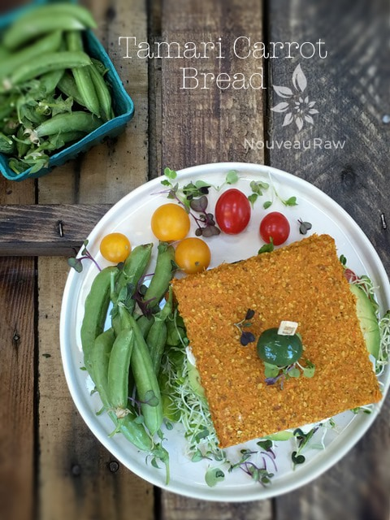
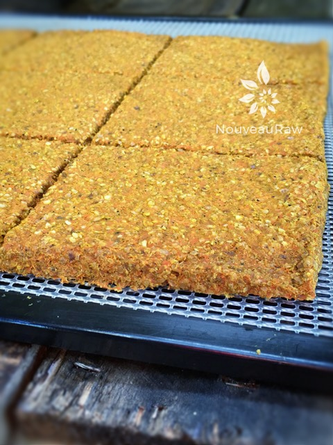

Tamari Carrot Bread

~ raw, vegan, gluten-free, nut-free, Paleo ~
Today, my Omega VRT350 came in the mail. No more than 10 minutes had passed when I found myself feeding carrots into the hopper. It hummed as I feed it one carrot after another, after another. I think it hypnotized me because before I knew it, I had a huge bowl of carrot pulp and enough juice to feed a herd of bunnies.
Herd of Bunnies
Well, I don’t have a pack of bunnies, so I drank it myself… yep, all of it, in one sitting. I expect that I will wake up with a self-tan in the morning. lol
Between my new juicer and my intensified effort to curb food waste, I went to work on ways to use the leftover pulp from juicing. A really good juicer will create a dry pulp, which can leave it lacking in flavor. So why would I use it? Well, the pulp has lots of fiber, and it seems a shame not to eat it.
The moisture content of the pulp that I create and you create will always very. It all depends on the juicer as well as the carrots themselves. So keep this in mind as you are creating the recipe. Sometimes you might have to add a little more liquid than other times.
Are there any Nutrients left?
You might be wondering if there are any nutrients left in the pulp? Isn’t the whole point is that the nutrients have been extracted when juicing? Technically yes. If you own a Norwalk juicer, there’d be nothing left but fiber. But those are not the most common household kitchen juicers (they run about $2,500). Most centrifugal juicers are imperfect enough to leave some nutrient content in the pulp. But trust me, we are not going to be partaking in a lack-luster-nutrient-void bread here.
Nope, instead, we will be enjoying a sandwich that is filled with fiber, healthy omega’s (thanks, flax), it will be anti-inflammatory due to the turmeric and black pepper (which is needed for its absorption). This bread is semi-spongy, flexible, subtle in flavor, yet sturdy enough to eat like a sandwich. A Tall order, but I fulfilled it. I hope you enjoy the recipe. Please comment below. Blessings, amie sue
yields 12 x 12″ bread
Preparation:
- In a food processor, combine the carrot pulp, water, flax flour, Tamari, mesquite flour, turmeric, coriander, and black pepper.
- Tamari is a soy sauce substitute. For a soy-free option use Coconut Aminos.
- Tamari adds umami and also is used in place of salt.
- Spread mixture on non-stick dehydrator sheets and score into bread size pieces. Make them as big or small as you wish.
- Dehydrate at 145 degrees (F) for 1 hour, then reduce to 115 degrees (F) for 4 hours.
- If you don’t have non-stick dehydrator sheets, you can use parchment paper but not wax. Food sticks to wax when drying.
- Partway through the dry time, remove from the dehydrator, and flip. To flip, place a dehydrator plastic mesh screen on top of the bread, and cover with a dehydrator tray. Flip the entire assembly over, remove the top tray, and peel the non-stick sheet from bread.
- Return to the dehydrator and continue to dehydrate for 6 more hours, until the desired consistency is reached.
- Store in an airtight container for 7 days in the fridge.
Culinary Explanations:
- Why do I start the dehydrator at 145 degrees (F)? Click (here) to learn the reason behind this.
- When working with fresh ingredients, it is essential to taste test as you build a recipe. Learn why (here).
- Don’t own a dehydrator? Learn how to use your oven (here). I do, however honestly believe that it is a worthwhile investment.


© AmieSue.com